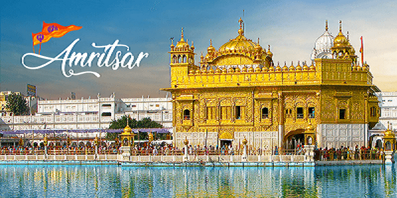
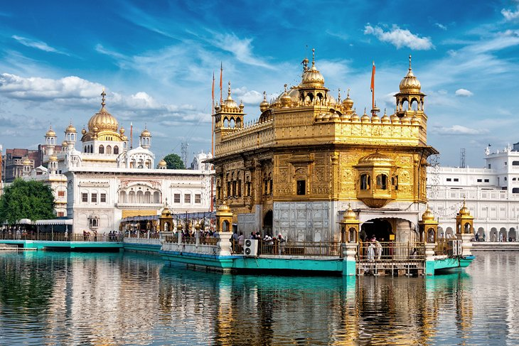
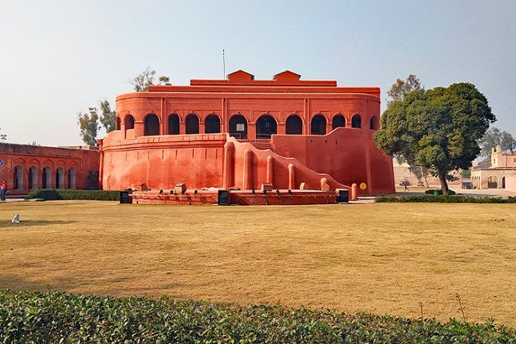
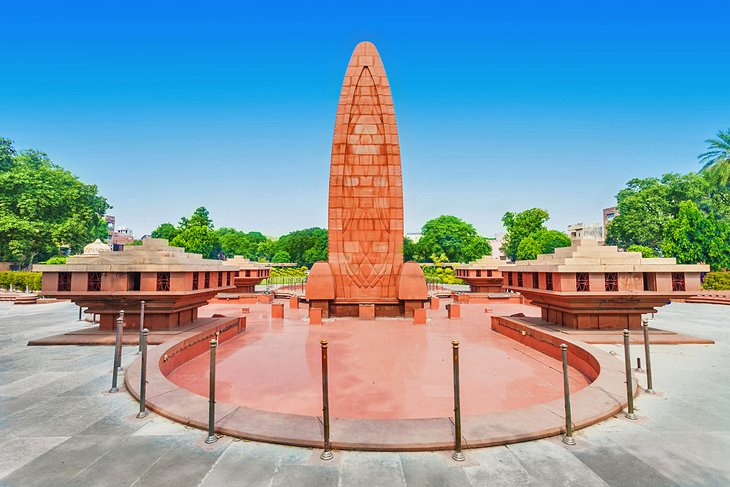
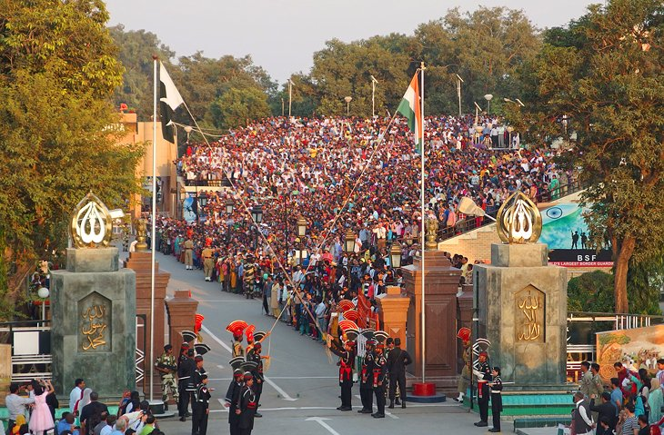

Welcome To Punjab |
|||
Home |
Amritsar |
Jalandhar |
Ludhiana |
|  | Amritsar (Punjabi pronunciation: [əmːˈɾɪtsəɾ] (About this soundlisten)), historically also known as Rāmdāspur and colloquially as Ambarsar, is the most populous city in the Indian state of Punjab. The city is the administrative headquarters of the Amritsar district and is located in the Majha region of Punjab. According to the 2011 census, the population of Amritsar was 1,132,761. It is one of the ten Municipal Corporations in the state and Karamjit Singh Rintu is the current mayor of the city.[5] The city is situated 217 km (135 mi) northwest of state capital Chandigarh, 455 km (283 miles) northwest of New Delhi, the national capital, and 47 km (29.2 miles) northeast of Lahore, Pakistan, with the Wagah Border being only 28 km (17.4 mi) away. Amritsar has been chosen as one of the heritage cities for HRIDAY - Heritage City Development and Augmentation Yojana scheme of Government of India.[6] Amritsar is home to Harmandir Sahib, popularly known as "the Golden Temple," one of Sikhism's most spiritually significant and most-visited gurudwaras. The city is also known for its wooden chessboards and chess pieces manufacturing industry. HistoryThe Bhagwan Valmiki Tirath Sthal situated at Amritsar is believed to be the Ashram site of Maharishi Valmiki, the writer of Ramayana.[8][9] As per the Ramayana, Sita gave birth to Lava and Kusha, sons of lord Rama at Ramtirth ashram. Large number of people visit Ramtirth Temple at annual fair. Nearby cities to Amritsar, Lahore and Kasur were said to be founded by Lava and Kusha, respectively. During Ashvamedha Yagna by Lord Rama, Lava and Kush caught the ritual horse and tied Lord Hanuman to a tree near to today's Durgiana Temple. Founding of Amritsar CityGuru Ram Das, the fourth Sikh guru is credited with founding the holy city of Amritsar in the Sikh tradition. Two versions of stories exist regarding the land where Ram Das settled. In one based on a Gazetteer record, the land was purchased with Sikh donations, for 700 rupees from the owners of the village of Tung. According to the Sikh historical records, the site was chosen by Guru Amar Das and called Guru Da Chakk, after he had asked Ram Das to find land to start a new town with a man-made pool as its central point.After his coronation in 1574, and the hostile opposition he faced from the sons of Amar Das,[15] Ram Das founded the town named after him as "Ramdaspur". He started by completing the pool, and building his new official Guru centre and home next to it. He invited merchants and artisans from other parts of India to settle into the new town with him. The town expanded during the time of Arjan financed by donations and constructed by voluntary work. The town grew to become the city of Amritsar, and the pool area grew into a temple complex after his son built the gurdwara Harmandir Sahib, and installed the scripture of Sikhism inside the new temple in 1604. The construction activity between 1574 and 1604 is described in Mahima Prakash Vartak, a semi-historical Sikh hagiography text likely composed in 1741, and the earliest known document dealing with the lives of all the ten Gurus. Maharaja Ranjit Singh listening to Guru Granth Sahib being recited near the Akal Takht and Golden Temple, Amritsar, Punjab, India. In 1766, Ahmad Shah invaded the Sikh Confederacy, besieged Amritsar, massacred the populace and destroyed the city. Old walled cityDuring Sikh Empire in 1822 Maharaja Ranjit Singh fortified the city starting from a wall at Katra Maha Singh area. Later, Sher Singh continued with the construction of the wall with twelve gates (Lahori Darwaza, Khazana, Hakeema, Rangar Nangalia, Gilwali, Ramgarhia, Doburji, Ahluwalia, Deori Kalan, Rambagh Deori, Shahzada and Lohgarh) in it and a fort named Dhoor Kot that had fortification 25 yards broad and 7 yards high. The circumference of the walled city was around five miles. When in 1849, British annexed Punjab, Amritsar was a walled city and they build thirteenth gate to it known as Hall Gate EconomyAmritsar is the second-largest city and district of Punjab. It is also one of the fastest growing cities of Punjab. In the mid 1980s the city was famous for its textile industry. After the 1984 Sikh riots Amritsar faced a blow in Industrial growth but there are still many textile mills present in the city. It is famous for its Pashmina Shawls, Woolen Clothes, Blankets, etc. Among handicrafts, the craft of the Thatheras of Jandiala Guru in Amritsar district got enlisted on UNESCO's List of Intangible Cultural Heritage in 2014,[55] and the effort to revive this craft under the umbrella of Project Virasat is among India's biggest government-sponsored craft revival programs.[56]TransportAir: Sri Guru Ram Dass Jee International Airport Amritsar hosts Sri Guru Ram Dass Jee International Airport. The airport is connected to other parts of India and other countries with direct international flights to cities. The Airport is 12th busiest Airport of India in terms of International Traffic.[57] The Airport serves not only Amritsar, but also may other districts in Punjab and neighbouring states. Rail: Amritsar Junction Railway Station is the primary terminus station serving Amritsar. It is the busiest Railway Station in Indian State of Punjab and one of the highest revenue generating station of Northern Railways. Due to high traffic at the Amritsar Junction Railway Station, Indian Railways has planned to develop 2 satellite stations-Chheharta and Bhagtanwala, in order to decongest traffic at this station. As many as 6 trains would be shifted to Chheharta Railway Station in the first phase.[58] The Indian Railway Stations Development Corporation has also planned to make the Amritsar Junction Railway Station, a world class railway station on lines of International Airport based on PPP Model. The project has received an overwhelming response with bids from 7 private firms, including GMR. Road: Amritsar Inter State Bus Stand Amritsar is located on the historic Grand Trunk Road (G.T Road), also known as NH 1 now renumbered as National Highway 3. An expressway by name of Delhi-Amritsar-Katra Expressway at the cost of ₹25,000 crore is approved under Bharatmala scheme which will cut the travel time from Amritsar to New Delhi by road from current 8 hours, to 4 hours.[60] Another expressway, called Amritsar Jamnagar Expressway is under construction which will connect Amritsar to Jamnagar in Rajasthan. Additionally, NH 54 (Old NH15), NH 354 and NH 503A connect Amritsar to other parts of state and rest of India. A ring road will also be built surrounding all 4 sides of Amritsar Rs 450,000,000 is being spent to expand the Amritsar-Jalandhar stretch of G.T. Road to four lanes. In 2010, elevated road with four lanes connected to the National highway for better access to the Golden Temple has been started.[62] Amritsar MetroBus Amritsar has a bus rapid transit service, the Amritsar Metrobus which was launched on 28 January 2019. 93 fully air-conditioned Tata Marcopolo buses are used for the service connecting places like Golden Temple, Jallianwala Bagh, Guru Nanak Dev University and Khalsa CollegeS |
||
Popular Places In Amritsar |
|||
|  |  |  |  |
| © Punjab Website2021 | Design By: Tarun | ||